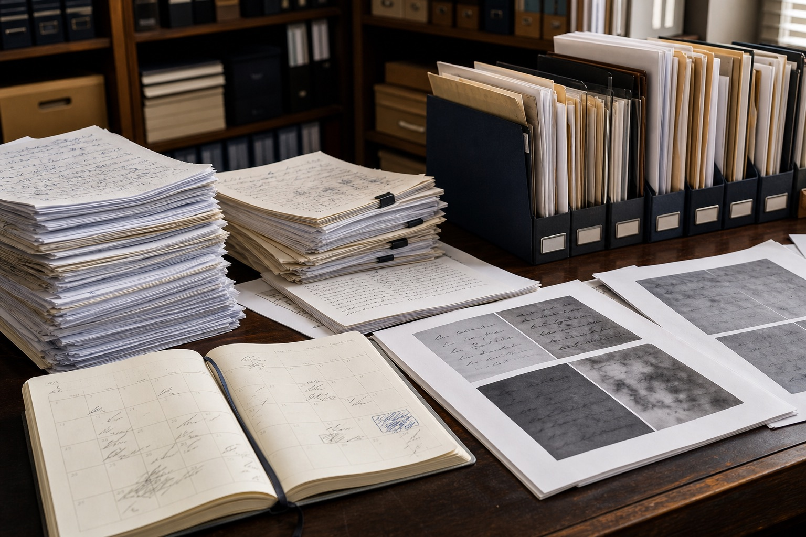

笔迹鉴定收费标准背后：页数、样本时期与图像质量怎样影响工作量
有人拿着一页签字材料询价，也有人带来几本跨越多年的手写记录。表面上都是“看笔迹”，需要清点、筛选和比较的工作量却完全不同，所以笔迹鉴定收费标准不能只按一个字或一张纸简单理解。

页数多不等于有效信息一定多
十页重复复印件，可能不如两页来源明确的原件有用。前期需要先排除重复页、区分原件与复制件，再确认哪些内容包含可比较的相同字。材料数量影响整理时间，有效性则决定后续比较能走到哪一步。
搜索“笔迹鉴定一个字多少钱”时，用户希望快速得到数字，但单字复杂程度、是否有原件、对比样本是否充足都会造成差别。先说明材料条件，比把所有情况压成统一单价更接近实际。
样本跨期越长，筛选越不能省
样本如果跨越数年，需要按时期分组，查看书写习惯是否出现阶段性变化。同一时期的自然样本不足时，还可能需要补充来源明确的材料。这些工作不会直接显示在最终页数上，却是理解差异的重要过程。
模仿笔迹的连续正文、模仿签名的固定姓名和模仿签字的快速落款，可比较内容各不相同。涉及多种材料时，不能把它们全部按“手写页”笼统计数。
图像质量决定有多少细节可供查看
低清截图、二次拍屏和多次压缩图片，往往需要先确认是否还有原图。图像修复不能凭空补回已经丢失的笔画信息，因而材料沟通中应如实区分原件、扫描件、照片和截图。
询问笔迹鉴定费用时，可以同时提供四项信息：待分析文件页数、原件状态、自然样本时期、图片来源。笔迹鉴定机构据此确认受理范围，通常比只问一个总价更高效。
一份清楚的目录能减少无效往返
按照“文件名称—日期—页数—材料形式—备注”建立目录，重复件单独标记，不覆盖原始文件。目录本身不会替代专业判断，但能让双方先对材料范围达成一致，也便于发现缺失页和错配样本。
读者常问
笔迹鉴定收费标准全国都一样吗？
不同机构、委托事项和材料复杂程度可能不同，应以受理机构根据实际材料给出的说明为准。
只有照片能先询问费用吗？
可以先说明情况，但要注明照片来源、是否压缩以及纸质原件能否提供。
重复页会增加有效样本数量吗？
不会。相同文件的复印或截图不等于新的自然书写样本，整理时应标记为重复件。